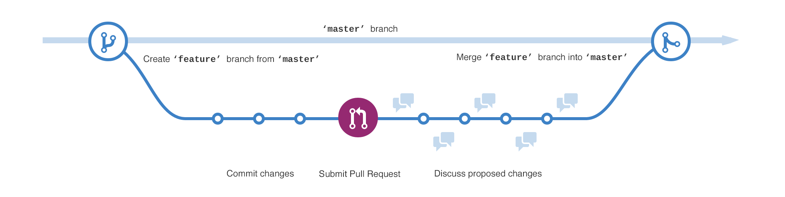

Versionsstyring bliver brugt fra at undgå fejl, eller kunne gå tilbage hvis man laver dem alligevel, udover dette er det også for at kunne holde styr på flere delprojekter, og så at kunne samarbejde flere om et projekt. Hvis man kigger på delprojekterne, så er det muligt at have samme elementer, men i forskellige versioner til forskellige kunder. Det er en metodisk tilgang til tingene, og kan bruges så simpelt som navngivning af filer og mapper, men kan også suppleres med noter om hvad skal er blevet ændret i de forskellige versioner. VCS, version control system, understøtter versionsstyring og det samarbejde der kan være, softwaren holder styr på forskellen mellem versionerne, og kan enten være en tjeneste i skyen eller installeret på en lokal server.
En af de meste udbredte måder blandt web-udviklere er baseret på git-protokollen, som ikker er det samme som github, men en standard og et versionsstyringsstytem, man kan selv opsætte en git-server. Her kommer Github, som vi har brugt på akademiet, ind i skolen, det er en server (i skyen), hvor man kan oprette git-respositories. Det er tiltænkt som et kodedelings-site, med mulighed for samarbejde og projektstyring, men kan også bruges som portfolio for kode til jobsamtaler f.eks. Det kan enten bruges i en browser eller i deres desktopprogram, og det er et sted hvor det er muligt at hente store eller små kodestumper til egne projekter.

Centrale begreber i GITHUB :
Repository (repo) - en samling af filer, som en projektmappe
Branch - en forgrening, en parallel version i repo, som ikke berører master
Masterbranch - "hovedforløbet", det er den gælende mappe
Commit - når man gemmer, men man har mulighed for at finde tilbage til versionen før
Pull request - Forslag til en ny udgave, f.eks. rettelser
Pull - når man henter ændringer og merger dem
Diff - forskellen mellem de to commits (difference)
Merge - når man samlinger ændringer i en branch med en anden (det kan være gennem pull request